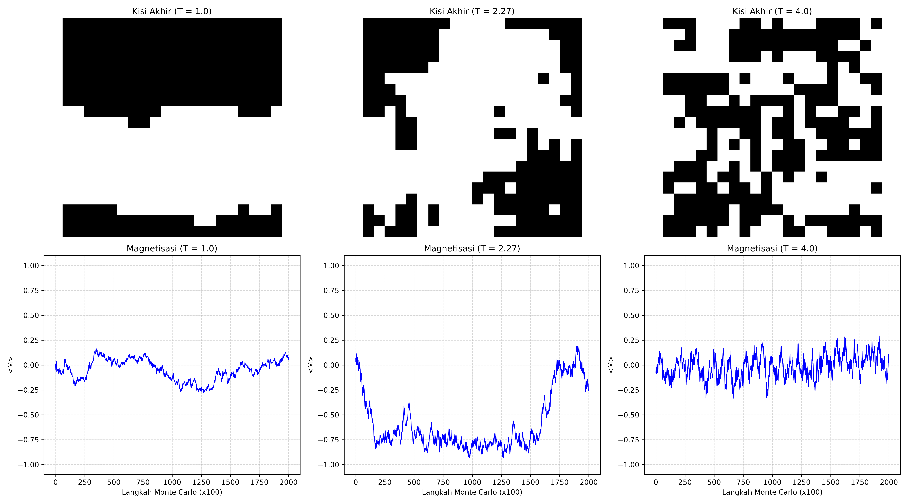

Fisika Komputasi: Simulasi Model Ising 2D via Algoritma Metropolis
Portofolio Studi Kasus Komprehensif mengenai Perilaku Kolektif Sistem Kisi Magnetik dan Transisi Fasa Makroskopis.
Visualisasi Hasil Simulasi (Semua Kasus)

Interpretasi Fisis Ilmiah Mendalam
Kasus 1: Fase Feromagnetik (Suhu Rendah, T = 1.0)
- Perilaku Kisi: Spin individu berorientasi searah secara spontan membentuk satu domain warna yang seragam (homogen).
- Analisis Mekanika Statistik: Pada suhu rendah (T < T_c), agitasi termal sangat lemah. Gaya tukar feromagnetik mendominasi sistem sehingga spin cenderung menyearahkan diri dengan tetangganya untuk meminimalkan energi lokal. Nilai mutlak magnetisasi rata-rata bergerak cepat dan stabil mendekati satu.
Kasus 2: Transisi Fasa & Kritikalitas (Suhu Kritis, T = 2.27)
- Perilaku Kisi: Terbentuk struktur domain fraktal yang kompleks di mana kluster spin hitam dan putih saling menembus dalam berbagai skala ukuran.
- Analisis Mekanika Statistik: Suhu T = 2.27 merupakan titik kritis teoritis (T_c). Terjadi persaingan seimbang antara energi termal yang mengacak sistem dan interaksi magnetik yang merapikan sistem. Akibatnya, keteraturan jarak jauh runtuh, memicu fluktuasi kritis makroskopis yang sangat besar pada kurva magnetisasi.
Kasus 3: Fase Paramagnetik (Suhu Tinggi, T = 4.0)
- Perilaku Kisi: Kisi spin tampak seperti mosaik acak yang tercampur merata tanpa ada pembentukan domain kelompok yang jelas.
- Analisis Mekanika Statistik: Pada rentang suhu tinggi (T > T_c), energi termal mendominasi total interaksi antar-spin. Agitasi termal yang sangat kuat menghancurkan segala bentuk keselarasan magnetik, membuat arah spin menjadi acak sepenuhnya, dan nilai magnetisasi rata-rata runtuh mendekati nol.
Atribusi & Referensi
Pada pengerjaan ini, kami menggunakan Gemini untuk mendesain struktur optimasi algoritma Metropolis pada potongan kode, serta lingkungan GitHub Codespaces sebagai alat manajemen isolasi komputasi awan virtual.
- Landau, D. P. A Guide to Monte Carlo Simulations in Statistical Physics.
- Rifani, Agus. Modul Pembelajaran: Simulasi Model Magnet dan Transisi Fasa.